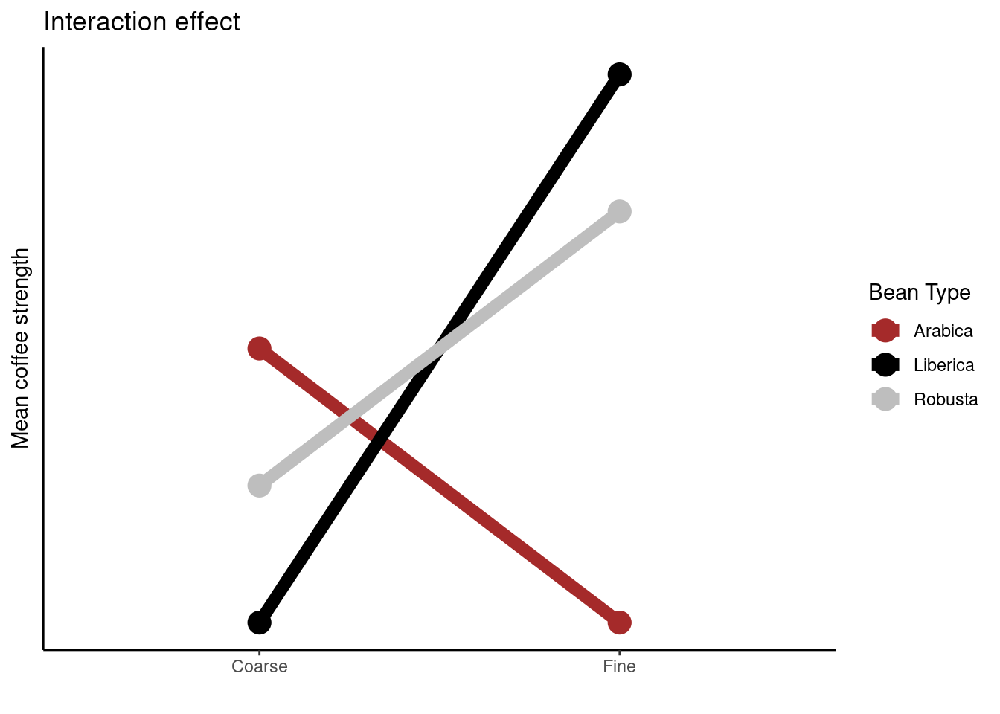
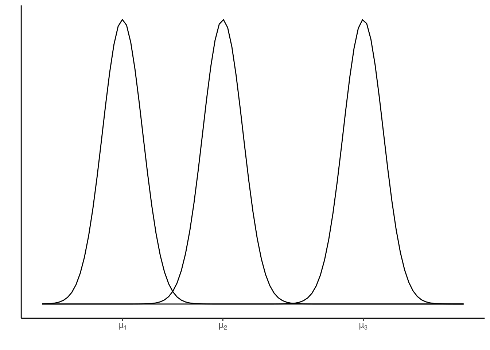

Logistic regression
We saw the Binomial distribution in module 4. We define a random variable, \(Y_i\), to have a binomial distribution if it is the number of successes from a number of independent trials, \(n\), each with the same probability of success, \(p\). It is a discrete distribution, which notes that the number of successes associated with the \(i^{th}\) observation must be an integer between \(0\) and \(n_i\). In addition, it builds in the non-constant variance of \(Y_i\) and \(\frac{Y_i}{n_i}\):
- \(\text{Var}(Y_i)=n_ip_i(1−p_i)\)
- \(\text{Var}(\frac{Y_i}{n_i}) = \frac{p_i(1−p_i)}{n_i}\)
If we were to assume a linear relationship (as previously) that \(p_i = \alpha + \beta_1 x_i\) then we would be allowing \(p < 0\) and \(p>1\), which is not supported by the binomial distribution. So, we use a link function to map between \(p\) and the real number line:
\[\text{logit}(p_i) = \text{log}\left (\frac{p_i}{1 - p_i}\right ) = \alpha + \beta_1x_i.\] This leads to \[p_i = \frac{\exp(\alpha + \beta_1x_i)}{1 + \exp(\alpha + \beta_1x_i)}.\] and
\[Y_i \sim \text{Binomial}(n_i, p_i)\]
An example: lobsters
Let us, again, consider data from the published article Influence of predator identity on the strength of predator avoidance responses in lobsters..
The authors were interested in how a juvenile lobster’s size was related to its vulnerability to predation. In total, 159 juvenile lobsters were collected from their natural habitat in the Gulf of Maine, USA, and the length of each lobster’s carapace (upper shell) was measured to the nearest 3 mm, size. The lobsters were then tethered to the ocean floor for 24 hours. Any missing lobsters were assumed to have been consumed by a predator, while the surviving lobsters were released (i.e., survived = 1 if lobster survived, 0 otherwise).
library(tidyverse)
data <- read_csv("https://raw.githubusercontent.com/STATS-UOA/databunker/master/data/lobster.csv")
data ## # A tibble: 159 × 2
## size survived
## <dbl> <dbl>
## 1 42 0
## 2 36 0
## 3 51 1
## 4 33 0
## 5 33 1
## 6 45 1
## 7 54 1
## 8 48 0
## 9 39 0
## 10 48 1
## # … with 149 more rowsUngrouped model
Fitting a binomial model we specify family = "binomial" in our glm call. Note that the default link function for family = "binomial" is the logit link; we could also use the equivalent syntax binomial(link = logit)to specify this model.
##
## Call:
## glm(formula = survived ~ size, family = "binomial", data = data)
##
## Deviance Residuals:
## Min 1Q Median 3Q Max
## -2.1019 -0.8454 -0.3771 0.9304 2.0711
##
## Coefficients:
## Estimate Std. Error z value Pr(>|z|)
## (Intercept) -7.89597 1.38501 -5.701 1.19e-08 ***
## size 0.19586 0.03415 5.735 9.77e-09 ***
## ---
## Signif. codes: 0 '***' 0.001 '**' 0.01 '*' 0.05 '.' 0.1 ' ' 1
##
## (Dispersion parameter for binomial family taken to be 1)
##
## Null deviance: 220.41 on 158 degrees of freedom
## Residual deviance: 172.87 on 157 degrees of freedom
## AIC: 176.87
##
## Number of Fisher Scoring iterations: 4
Grouped model
The data are currently ungrouped, despite many lobsters sharing the same carapace size. Therefore, we rearrange the data set so that it is grouped:
grouped <- data %>%
group_by(size) %>%
summarise(y = sum(survived), n = length(survived), p = mean(survived))
grouped## # A tibble: 11 × 4
## size y n p
## <dbl> <dbl> <int> <dbl>
## 1 27 0 5 0
## 2 30 1 10 0.1
## 3 33 3 22 0.136
## 4 36 7 21 0.333
## 5 39 12 22 0.545
## 6 42 17 29 0.586
## 7 45 13 18 0.722
## 8 48 12 17 0.706
## 9 51 7 8 0.875
## 10 54 6 6 1
## 11 57 1 1 1Where,
sizeis as above,yis the number of lobsters of each size that survived,tis the total number of lobsters of each size, andpis the proportion of lobsters of each size that survived.

Fitting a binomial model again we specify family = "binomial" in our glm call and specify our response as cbind(y, n - y):
##
## Call:
## glm(formula = cbind(y, n - y) ~ size, family = "binomial", data = grouped)
##
## Deviance Residuals:
## Min 1Q Median 3Q Max
## -1.12729 -0.43534 0.04841 0.29938 1.02995
##
## Coefficients:
## Estimate Std. Error z value Pr(>|z|)
## (Intercept) -7.89597 1.38501 -5.701 1.19e-08 ***
## size 0.19586 0.03415 5.735 9.77e-09 ***
## ---
## Signif. codes: 0 '***' 0.001 '**' 0.01 '*' 0.05 '.' 0.1 ' ' 1
##
## (Dispersion parameter for binomial family taken to be 1)
##
## Null deviance: 52.1054 on 10 degrees of freedom
## Residual deviance: 4.5623 on 9 degrees of freedom
## AIC: 32.24
##
## Number of Fisher Scoring iterations: 4